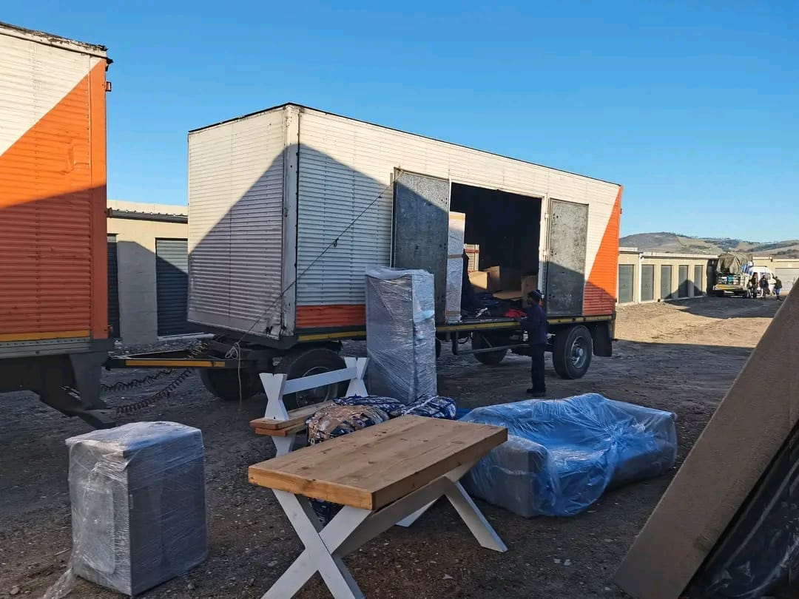
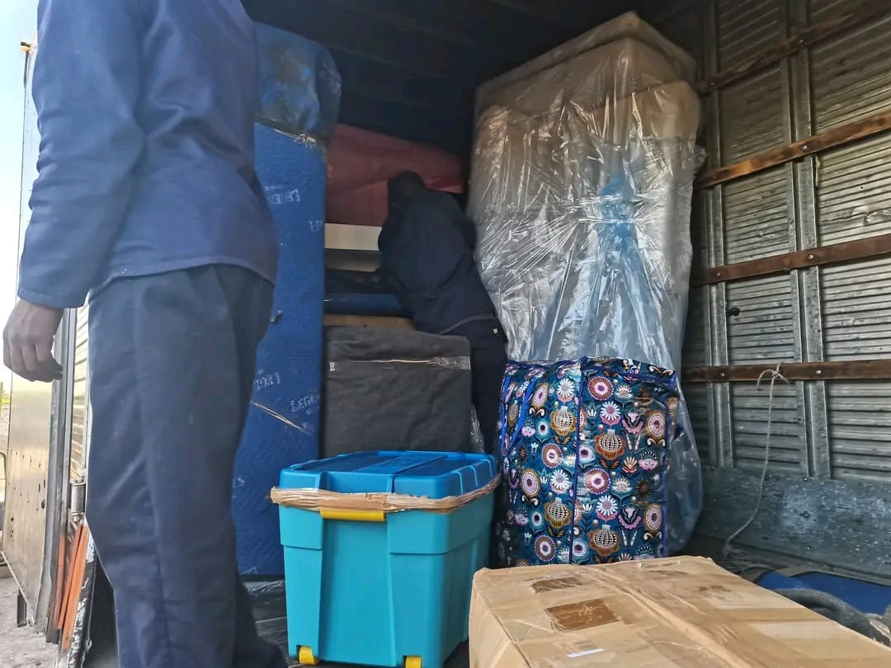

Our Services
Professional removal services across Cape Town, Kraaifontein & Western Cape
Furniture & House Removals
Moving home can be stressful — but it doesn't have to be. At Wize Furniture Removal, we make your relocation seamless and worry-free. Whether you're moving across the street in Kraaifontein or relocating to the other side of Cape Town, our experienced team is ready to help.
We carefully load, transport and offload all furniture types — from fragile items to heavy wardrobes and couches — using the right equipment and protective blankets. Our fleet of reliable trucks is maintained to the highest standard to keep your belongings safe every step of the way.
- Local house and flat moves across Cape Town
- Office and business relocations
- Single-item and partial-load moves
- Long-distance moves across Western Cape
- Careful packing and handling of valuables

Rubble & Garden Refuse Removal
Renovation project finished? Garden overgrown? We provide fast, efficient and responsible rubble and refuse removal services for residential properties and construction sites throughout Cape Town and Kraaifontein.
Our team arrives with the right equipment, clears the site quickly and disposes of all material responsibly, leaving your property clean and tidy. No job is too big or too small — from a small garden clear-out to a full post-renovation rubble haul.
- Building and renovation rubble removal
- Garden refuse and tree-trimming waste
- Post-construction site cleanup
- Household junk and old furniture disposal
- Responsible and compliant waste disposal
